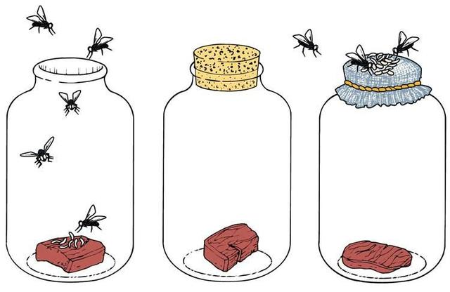

"Гипотезы о происхождении жизни"
Антон Завьялов и Александр Жигулев по материалам
Wikipedia и учебника общей биологии за 10-11 классы.
Основные гипотезы
Креационизм
Самозарождение
Панспермия
Биохимическая эволюция
Креационизм —
теологическая и мировоззренческая концепция, согласно которой
основные формы органического мира (жизнь), человечество, планета Земля,
а также мир в целом, рассматриваются как непосредственно созданные Творцом или Богом.

Теория самозарождения —
совокупность воззрений, согласно которых возможно
спонтанное зарождение живых существ из неживых материалов;
в общем случае, самопроизвольное возникновение живого вещества из неживого, например:
появление мух из гнилого мяса, рыб из ила, червей из почвы.
Эта теория существовала с античных времен до середины XVII в. Так, ее приверженцем
был Аристотель. В 1668 г. Франческо Реди на опыте доказал, что перерождение мух из мяса невозможно.
В 1862 году Луи Пастер окончательно опроверг теорию в своих трудах.
Панспермия —
гипотеза о появлении жизни на Земле
в результате занесения из космического пространства
так называемых «зародышей жизни».
Согласно панспермии, рассеянные в космическом пространстве зародыши жизни
(например, споры микроорганизмов) переносятся с одного небесного
тела на другое с метеоритами или под действием давления света.
Гипотеза биохимической эволюции —
современные представления о зарождении жизни на Земле. Согласно гипотезе,
под воздействием ультрафиолетового излучения, радиации, электрических разрядов
в Мировом океане формировался "первичный бульон", из которого синтезировались
сложные химические соединения, впоследствии образовавшие формы жизни.